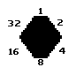

documentation
This is a description on how to create your own pictures of objects. When creating your own graphics the file tools\hexpics\hexfield.pcx should be used as the basis and the object has to be painted in the hexagon there. The color #255 is transparent so fill the remaining hexagon with this color when finished.
But the object must contain all 64 images. The position of each is determined by the sides that connect to another object. Each side has a number:

These number are than added. This picture for example has to be used on position 1 + 4 + 16 = 21 . Note that the first picture is #0 and the last #63 .I implemented a system that works even if not all pictures are available and built the "fields"-object with it. But as you can see in the mapeditor such objects are quite problematic so I removed this functionality from MAKEOBL again.